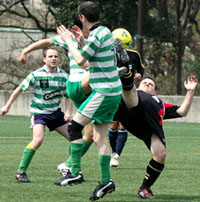

Dominant Sala Held by Lions
Hachioji Park, Saturday 25th April.
"The best teams win continuously, the rest don't." That was the message before kickoff from Sala's captain, Guido. Unfortunately, Sala are definetely in the latter category. After bossing YCAC on their home turf last week, they just couldn't grab all 3 points against Lions, despite dominating possession and chances, so this one finished in a draw. With a solo run and deflected shot from Abu of Lions and a solitary, but quality, equaliser from Toby the points were shared as the game finished 1-1. more
ST
Lions Tame the Double Trouble
Hachioji Park, Saturday 25th April.
After a hectic week in Hong Kong, and lack of sleep, the last thing I wanted was to find myself playing a full game in central defence due to having only 12 players against a strong Sala line-up, on the high after beating last year’s champs, and against us, after losing badly to Hibs with 8 players!
However, whenever Lions show up an hour before the game, and with the oldies (like your truly) are forced to play....commitment shows, and we Lions play our hearts out. more...
HS
King George Soar as Jets are Grounded
 |
|
KGFC knock JETS from the top spot in Div 3.
|
Horisaki Koen, Sunday 18th April.
Snow in April, a volcanic eruption and Spurs beating Chelsea; surely omens that something big was about to go down. It was. King George vs. Jets 2nds in Owada, with both teams knowing that first place in the league was at stake. The previous meeting ended in a 1-1 stalemate on cold evening back in December, would the third division’s frontrunners cancel each other out yet again?
The evening began with both teams watching the vacant Horisaki Koen pitch knowing full well that the draconian owners wouldn’t dream of letting them on the unused pitch until exactly ten minutes before the game. more
BS
YCAC Scalped by Sala
YC&AC, Saturday 17th April.
Undefeated at home since 2008, YCAC have turned their home turf into a bit of a fortress over recent years. It was suprising then that coming into this fixture the Sala boys fancied themselves to win, and to score 3 goals in the process!! "Fools!" you would have cried. But, this is Sala 2010! Anyway, sometimes you just think it's going to be your day. And, straight from kickoff it was. With 2 goals, and a MOTM performance from Sam Matthews, and a spot kick from Lenny Tui, Sala scalped YCAC 3-2 for a deserved victory. more...
ST
YC&AC Suffer First Loss of Season against Sala
YC&AC, Saturday 17th April.
An early Lenny Tui penalty kick and two goals from Sam Matthews in the 1st half sent Sala to a 3-2 victory against an undefeated side in TML competition since their last loss against the Tokyo Hibernians on October 4th, 2008. YC&AC now has "no margin for error" with their title race between the Hibs, if they are hoping to claim their 2nd consecutive TML title.
YC&AC had just returned from an outing to Singapore for teh Soccer Sixes, to read about that, click here
JT
Panthers Halt Swiss Roll!
 |
|
Sho Itaya secures the win for Panthers.
|
Fukuda Denshi, Sunday 10th April.
The Swiss have been the form team in Division 2 over the last couple of months, putting together a string of results that have taken them to the verge of promotion and within site of the summit. Panthers, on the back of their first defeat of the season last time out and missing a number of key players (and me), were looking a bit wobbly and in danger of undoing all the good work. So the scene was set for a good old fashioned 6-pointer at Fukuda Denshi. more
AV
Sala Set Pieces Kill Celts
Fukuda Denshi, Sunday 4th April.
Sala did the league and cup double on the Celts mainly through hard work, solidarity and 3 duff goals from set pieces. Sweet was the victory, but sweet the goals were definetely not. 3-0 to Sala was the final score after close range nods and sclaffs from Dan (2yds), Masa (8yds) and Sam (6yds). The solidarity was in each players commitment to not score a good goal and to not out-do his brother in arms. more
ST
Spoils Shared in Sakura Showdown
|  |
|
An acrobatic Nick Webb scares John Conama
|
Hodogaya Koen, Saturday 3rd April.
Sakura in bloom, sunshine, and a perfect pitch all combined to provide the perfect setting for a pre-hanami showdown at Yokohama’s Hodogaya complex.
The opposing teams went into the game with contrasting recent records. Celts second’s had scraped a 2-1 victory over foot of the table Guarana Republic, whilst the Pumas were still searching for their first 3 points of 2010.
The Pumas line up of late has started to look much more settled and it was bolstered by the attacking presence of Panthers regular goal scorer Sho. The Celts had the clear height and weight advantage, but with such a wide and spacious pitch in use it would be the more streamline players who would benefit. more
TS
Geckoes Drop 9 Goal Thriller in the Far Reaches of Saitama.
Horisaki Koen, Saturday 3rd April.
The Geckoes made a dream start on Saturday night, with Jonas Mogui scoring a brace inside ten minutes. Their domination continued until mid-way through the first half when FC International clawed themselves back in to the match, pushing a loose midfield ball in to the area where it was laid off and finished from 4 yards. more
CP
YC&AC Push Ahead in Title Hunt
YC&AC, Saturday 3rd April.
YC&AC demonstrated another series of brilliant team effort, scored three goals and cruised to a 3-0 shutout against TML rival BFC on Saturiday night. more
JT
|